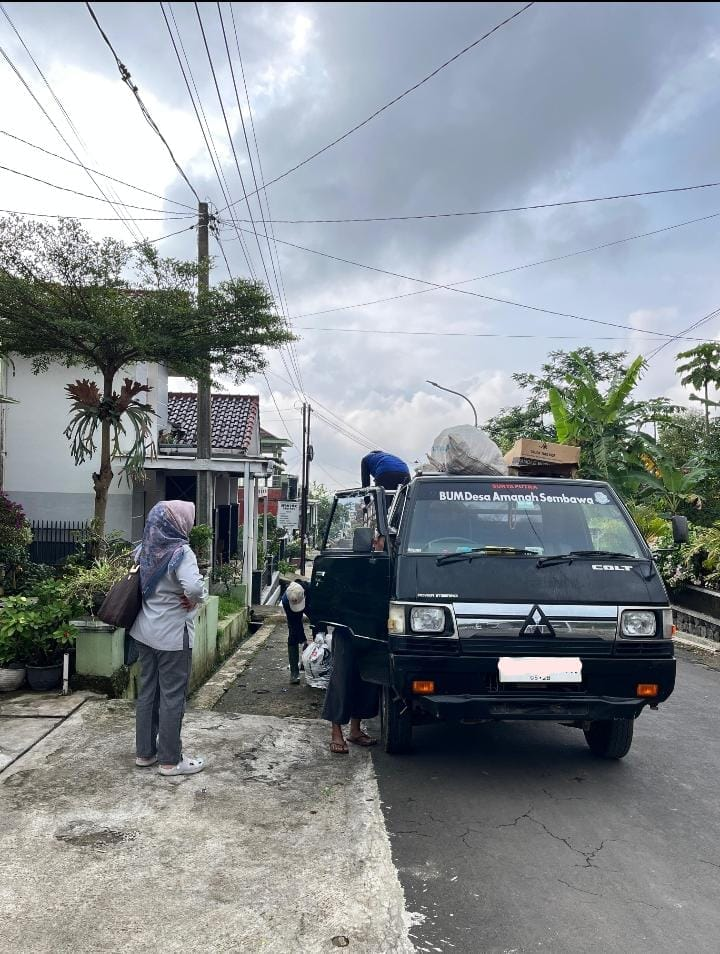
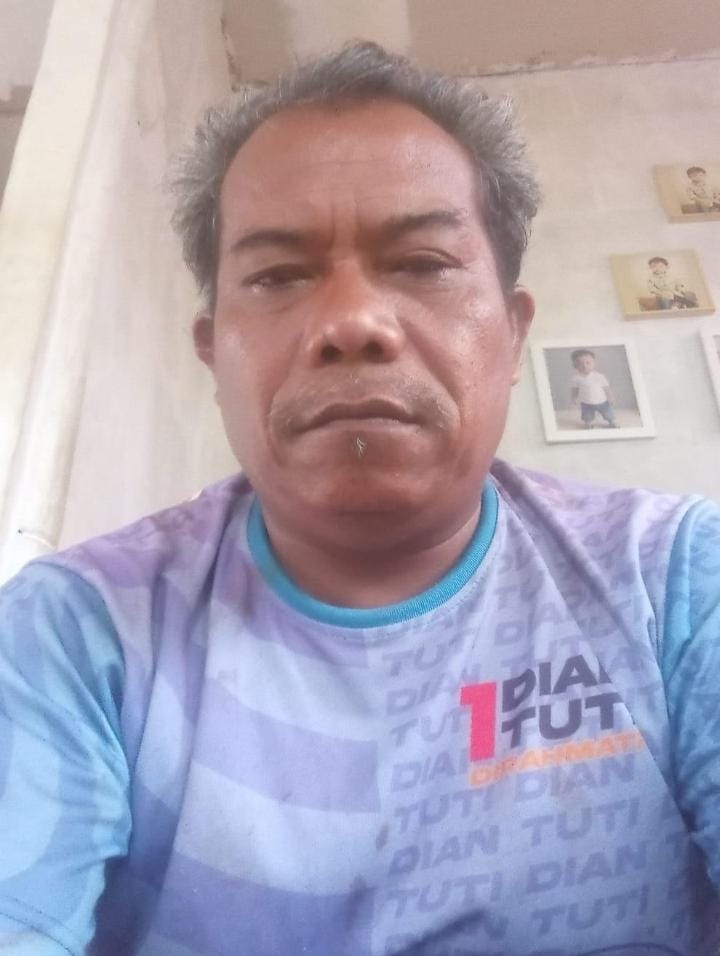
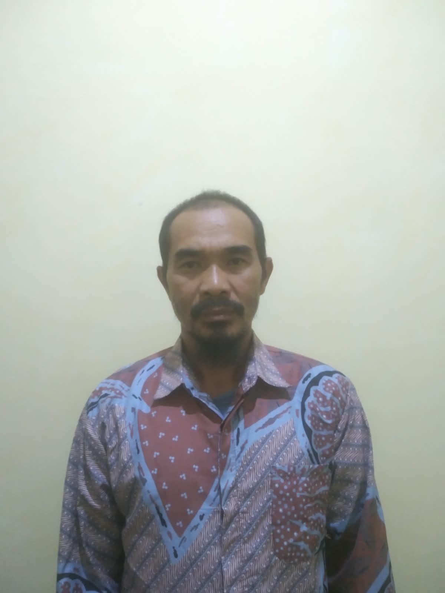
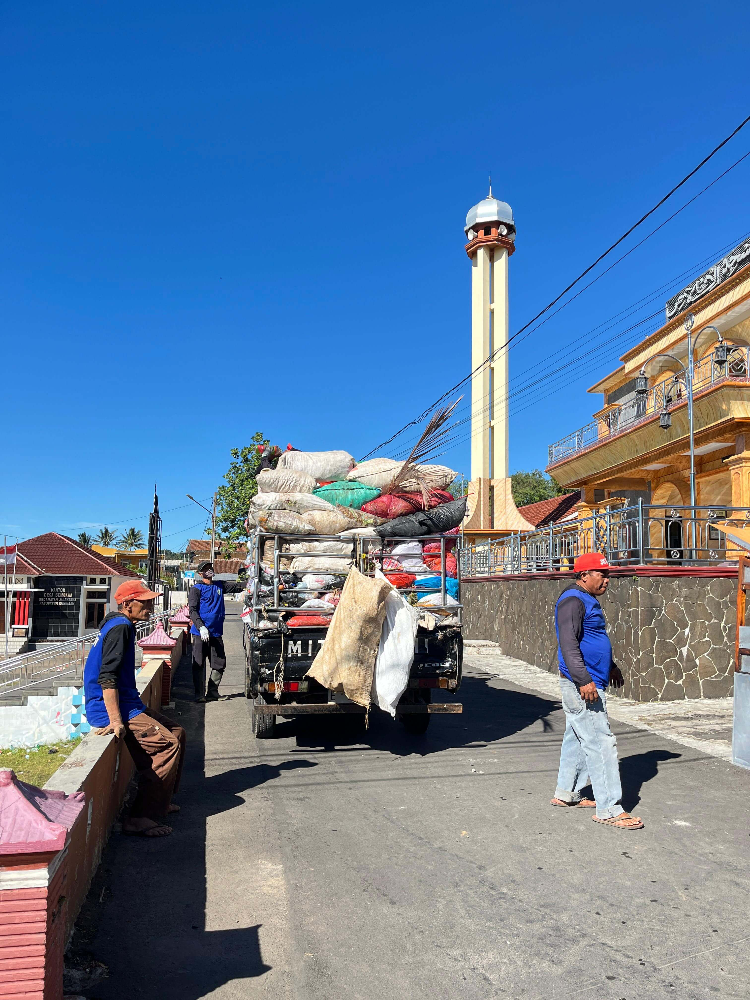
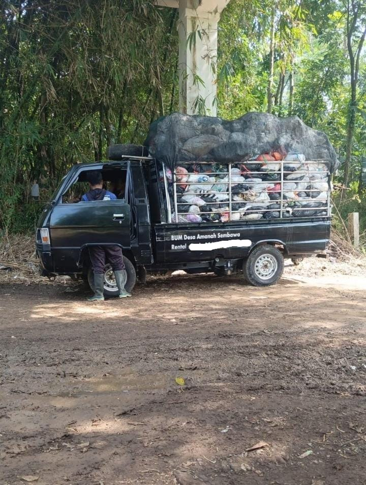
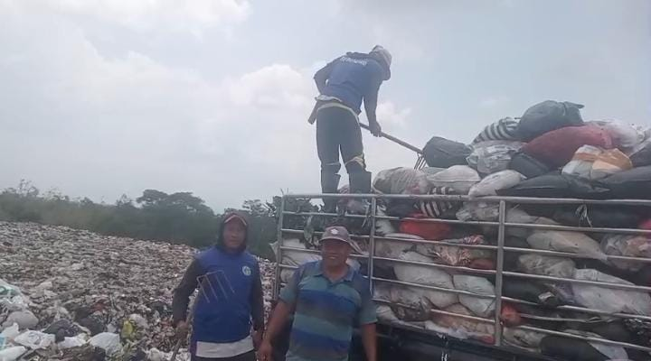

🚛 Layanan Aktif
Layanan Unggulan
Armada Sampah
Layanan pengangkutan sampah rumah tangga secara rutin agar lingkungan desa bersih dan nyaman. Dikelola langsung oleh warga, untuk kesejahteraan warga. Armada sampah dibentuk pada Januari 2020 sebagai bentuk kesadaran masyarakat desa sembawa untuk membuang sampah pada tempatnya agar bisa menciptakan lingkungan yang bersih dan sehat
Kelebihan Program:
- Pengangkutan terjadwal tiap hari Rabu dan Sabtu.
- Pembayaraan iuran bulanan terjangkau untuk seluruh warga seharga RP.8000 per rumah dan RP.20000 untuk pengusaha .
- Armada dan petugas kebersihan dari warga desa setempat.
Tim Pengelola

Koko Raska
Koordinator Lapangan

Iing Roswandi
Petugas Armada
Abdul Rahman
Petugas Armada
Dokumentasi Usaha

Pengangkutan sampah dari rumah warga
pengantaran sampah menuju lokasi TPA
Pembuangan sampah di TPA ciniru